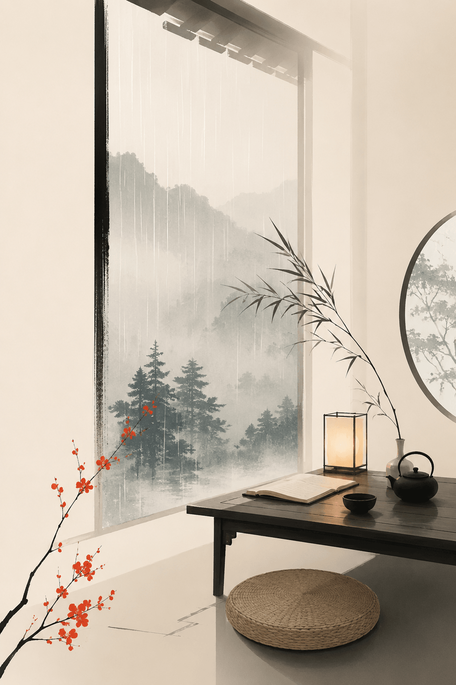

山中入夜早，暮色从松梢落下来，先暗了溪石，再暗了竹篱，最后才贴到小窗上。窗纸被湿气润得微明，灯火在案头瘦瘦地亮着，一卷经书摊开，字迹像刚从雨声里浮出，又像随时会被雨声带回去。雨从黄昏开始下，初时很轻，只在瓦背上点几下，像有人远远试探门环。后来渐密，檐水连成线，滴在阶前青苔上，细响不绝。山窗半启，冷气入室，带着松脂、泥土、败叶的气味。人坐久了，身上的热气渐退，心里那些白日里纷乱的念头，也被雨一点一点洗薄。
山寺无钟，钟在更远的峰后，隔着雨雾，声息全无。惟有雨声替夜守时。落在芭蕉上，是宽阔的声；落在竹叶上，是碎细的声；落在石井边，是清冷的声；落在空庭里，又成了无边的声。听久了，仿佛万物各有耳目，各自领受这场雨，各自沉默。
案上茶已凉，盏中浮着一片细叶，贴着水面，随屋外风意轻轻转动。人看一片茶叶，也能看见一生劳碌。初时沉浮不定，后来慢慢归于一隅。世人多怕寂寞，怕无人相问，怕门前草深，怕旧友不至。山窗雨夜却把这些怕处一一照出。原来心中不安，多半由求声名来；心中不静，多半由怕空闲来。
雨打窗棂，声声皆近。近到像在眉睫之间。闭目听之，山不在外，雨不在外，窗也不在外。檐下每一滴水落下，都像念头生起又灭去。生时分明，灭时无痕。若追着一滴雨问它从何处来，便会误入云水旧账；若守着一声响问它往何处去，又会在空庭里添出许多回声。听雨，只须听它正在落下。
墙上竹影微动，那一动，使屋子显得更静。人也常在一动中知静，在一失中知足，在一场雨里知山。平日走过山径，看松只是松，看石只是石，心忙时连春秋都嫌多余。今夜雨密，诸色退尽，松石竹篱皆藏于暗处，反而各自清楚。看不见处，未必空无；听得深时，才知万象并未离席。
少年时，也曾雨夜临窗。那时的雨，是远行、功名、他日归来；中年临窗，听的是聚散、得失、半生忙迫；如今山窗下，雨仍是雨，人已少了许多用意。许多话不必说，许多路不必赶，许多是非不必判。窗外檐水一滴一滴，像替人删去旧稿，只留下几行可读的空白。
夜半，雨势稍缓。远溪涨水，低低作响。山风经过竹林，带来几片湿叶，贴在窗前。人伸手关窗，又停住。若关了窗，雨声便远；若开着窗，寒意又深。停在半启之间，倒也恰好。世间许多事，太近则扰，太远则隔，半窗风雨，正可安身。
经书仍摊在案上，灯下那一页讲诸行无常。字句并不玄远，只是人常要走到夜深雨冷处，才肯承认它说得平常。雨落了一夜，并未为谁开示，却使山更深，使窗更明，使听雨的人少说一句，多省一念。
将近天明，雨停了。檐头余滴仍偶尔落下，叩在阶石上，清脆如磬。东方未白，群峰藏在淡墨里。推窗望去，松针含水，石径无尘，远处一枝山茶被雨洗得沉静。人坐回蒲团，心中没有新得，也没有旧失。只觉这一夜雨声，从山外来，又从心上过，最后都归入窗前一片清凉。
山窗依旧，雨声已歇，听雨的人也该歇了。